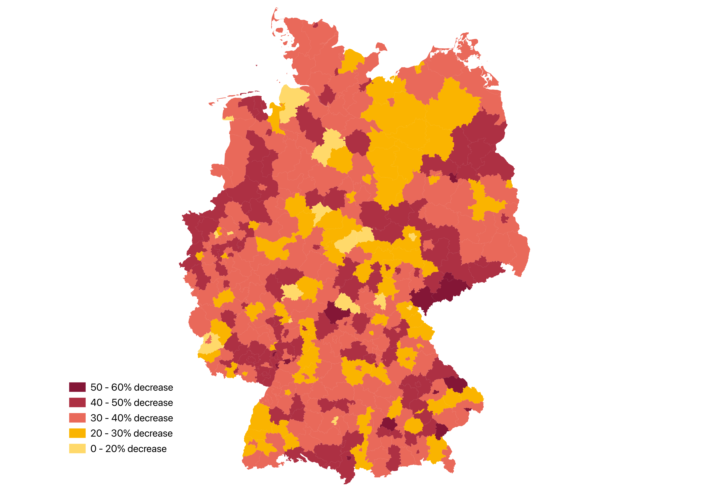

Reductions in time on market are geographically widespread rather than concentrated in a single region, suggesting a broad-based shift in housing market dynamics rather than an isolated effect.
Methodology
District-level housing market indicators were sourced from Value Marktdaten and joined to administrative boundary data (Kreise) for spatial analysis and visualisation in QGIS. Percent change was calculated relative to the 2024 baseline.
As a cross-check, the average of district medians shows a near-identical decline (19.63 → 12.55 weeks), confirming the overall pattern is not driven by outlier districts.
Results
The median of district-level medians declined from 19.4 weeks in 2024 to 12.4 weeks in 2025 — an absolute change of −7.0 weeks, or −36.5%. This indicates a substantial acceleration in market turnover over the one-year period.
Reductions are geographically widespread across the country rather than limited to a single region, with some districts exhibiting much larger declines than others. As a cross-check, the average of district medians shows a near-identical decline (19.63 → 12.55 weeks), confirming the pattern is not driven by a small number of outlier districts.